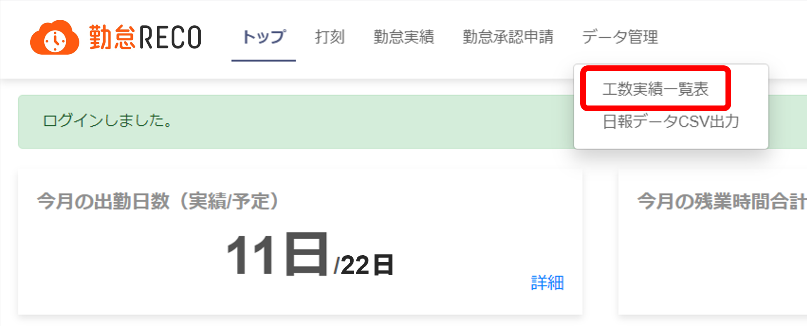
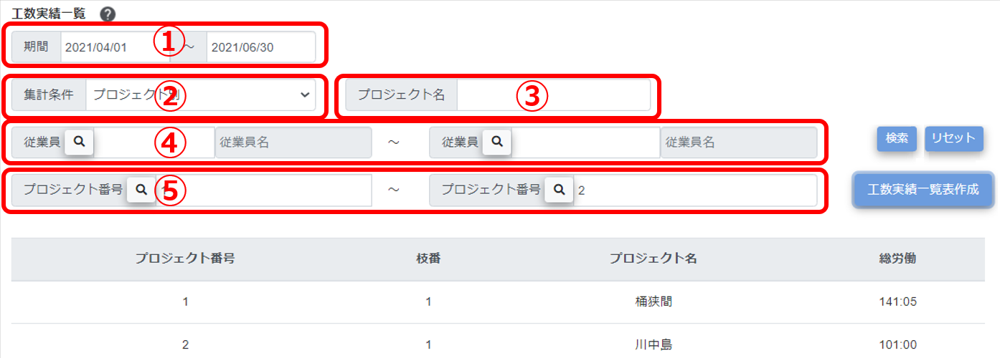
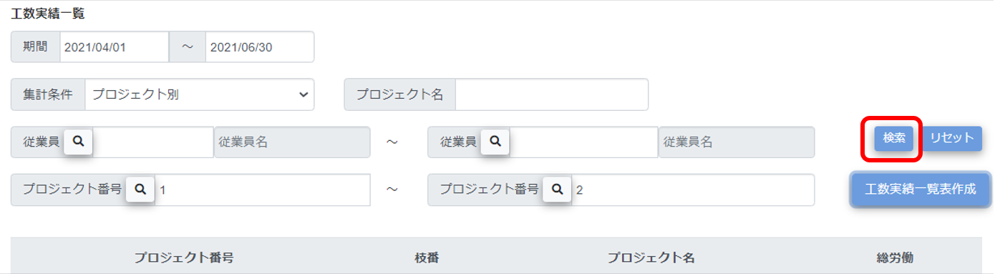
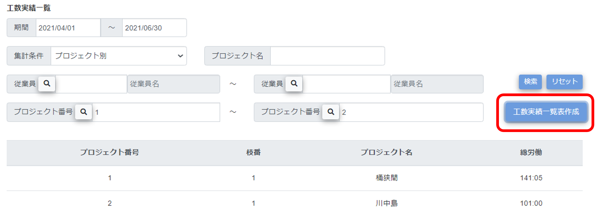
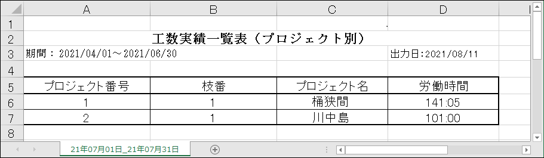

工数実績一覧表を作成する
プロジェクト別にかかった工数を確認したい場合などは、自身の工数実績一覧表を作成します。
-
［データ管理］メニューの［工数実績一覧表］をクリックする

-
確認したい工数を絞り込む検索条件を設定する

-
期間
出力したい工数実績の期間を入力します。カレンダーから選択します。期間だけを指定した場合は、その期間に工数入力があったプロジェクトすべての工数一覧を出力します。
-
集計条件
ドロップダウンリストから「プロジェクト別」「従業員別」「プロジェクト別従業員別」を選択します。
-
プロジェクト名
プロジェクト名の一部を入力すると、その文字列を含むプロジェクト名を検索します。
特定のプロジェクトの工数を確認したい場合は、プロジェクト名またはプロジェクト番号を指定してください。
-
従業員
従業員コードを入力します。
 をクリックすると、従業員コードのリストが表示されます。○をクリックして選択してください。
をクリックすると、従業員コードのリストが表示されます。○をクリックして選択してください。開始と終了の従業員コードを入力すると、範囲指定検索を行います。開始の従業員コードだけが入力されている場合は、完全一致検索を行います。
※一般権限の従業員では、従業員コードを指定することはできません。
-
プロジェクト番号
をクリックすると、プロジェクト番号のリストが表示されます。○をクリックして選択してください。開始と終了のプロジェクト番号を入力すると、範囲指定検索を行います。開始のプロジェクト番号だけが入力されている場合は、完全一致検索を行います。
特定のプロジェクトの工数を確認したい場合は、プロジェクト名またはプロジェクト番号を指定してください。
ヒント
検索を実行すると、設定した検索条件が記憶されます。［リセット］ボタンをクリックすると、設定した検索条件をすべてリセットできます。
-
-
［検索］ボタンをクリックする

検索結果が表示されます。
-
［工数実績一覧表作成］ボタンをクリックする

工数実績情報をまとめたエクセルファイルがダウンロードされます。
プロジェクトごとの総労働時間、そのプロジェクトの情報を確認できます。
